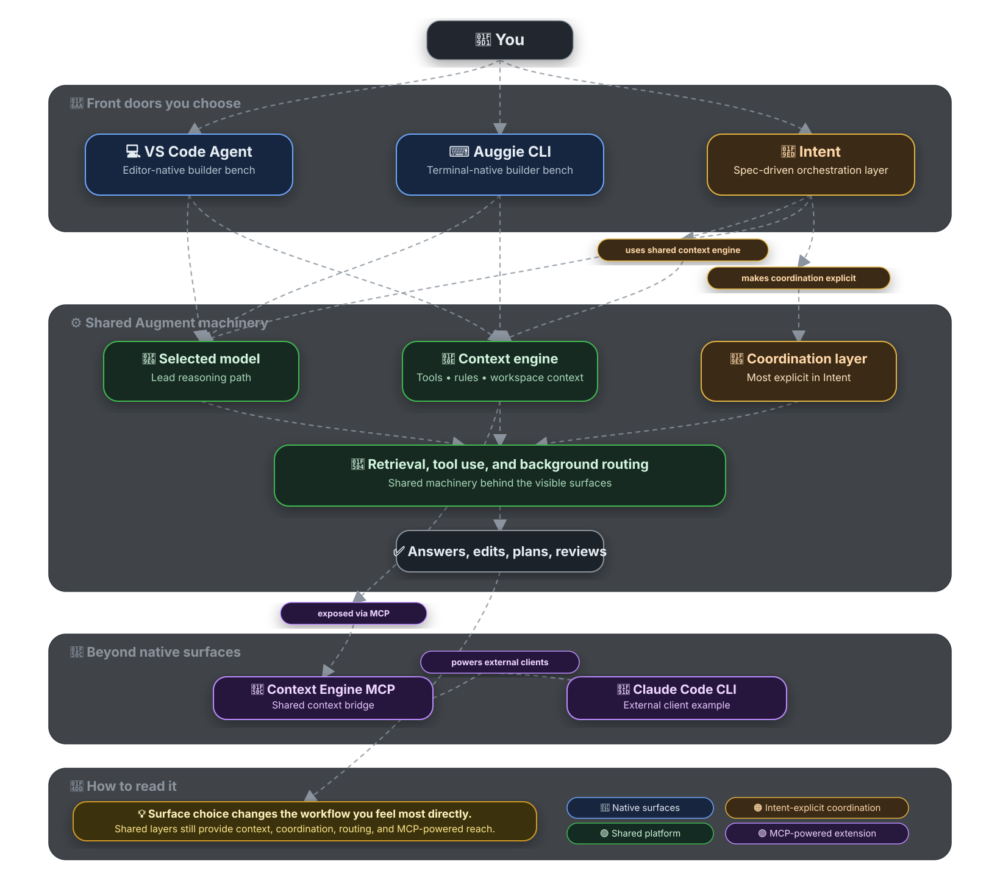

HTML rendered for sharing
Augment Architecture explained like a field guide instead of a mystery box
This page is the fuller HTML companion to setup/AugmentArchitecture.md. It pulls over the substantive guidance from the markdown note, folds in a curated role-reference chooser for Coordinator / UI Designer / Developer / Verifier, and keeps the architecture readable on a clean public URL.
One-line mental model
Augment makes more sense as a small software team than as one chatbot. The surfaces are intentionally different, the context/tooling layer matters, and Intent makes orchestration the most explicit.
Why this HTML exists
Direct shares of this page use page-owned metadata, styling, and assets. That makes it easier to browse and present than relying on GitHub-controlled previews of a markdown blob URL.
If you only read one minute
The shortest useful explanation
Start with the surfaces: VS Code Agent is the editor-native builder bench, Auggie CLI is the terminal-native builder bench, and Intent is the orchestration layer.
- General explores.
- Developer builds.
- PR Reviewer checks.
- PR Shepherd moves work toward merge-ready.
- UI Designer polishes presentation.
The workflow is the real differentiator: one agent plans, one builds, one reviews, one polishes. That is why larger-repo work can feel surprisingly smooth when Intent is used like a coordinated team instead of one giant chat thread.
Role-reference default: if you are unsure which lane should move first, start with Coordinator, then route design, build, and verification from there.
Choosing a model likely affects the lead reasoning path, without proving that it is the only system involved in every behind-the-scenes step.
Mental model
The layered view that makes the ecosystem click
The safest framing is not “one prompt goes to one model.” It is “a surface, plus rules, tools, context, and sometimes specialist orchestration.” That keeps the guide accurate without flattening what the product actually feels like.
| Layer | What it does | Confidence |
|---|---|---|
| VS Code Agent / Auggie CLI / Intent | The user-facing surfaces where you interact with Augment. | ✅ Documented and directly observable |
| Rules & guidelines | Shape behavior with user, workspace, and hierarchical instruction layers. | ✅ Documented |
| Tools | Let the agent read, edit, search, inspect, and run commands. | ✅ Documented and observable |
| Subagents / specialists | Assign narrower jobs to agents with clearer boundaries and success criteria. | ✅ Documented and observable |
| Retrieval / context systems | Help find the right code and docs quickly, including through Context Engine. | 🟡 Strongly supported |
| Internal model routing | May optimize how work is handled under the hood, but the exact contract is not fully exposed in the docs reviewed here. | ❓ Partly inferred |
Augment is best understood as an agentic system with roles, tools, and context — not just a single prompt going straight to a single model.
Three front doors
Same ecosystem, three deliberately different surfaces
Before going deeper into Intent, separate the surfaces first. That alone explains a lot of why the ecosystem can feel coherent while still giving very different user experiences.
VS Code Agent
Feels like a native IDE teammate focused on tight iteration, code edits, and reviewing changes without leaving the editor.
Best at: in-editor build work
Docs note: selected model in panel applies to Agent for the workspace
Auggie CLI
Feels terminal-first: shell-heavy work, repo inspection, command-driven tasks, and visible tool-call/result loops.
Best at: terminal-native workflows
Docs note: still missing some IDE-plugin features
Intent
Feels like the planning room: spec-driven development, delegation, parallel specialists, and cleaner handoffs.
Best at: orchestration + task routing
Docs note: describes Intent as spec-driven + orchestration app
| Surface | What it feels like | Best at | Distinct thing users notice |
|---|---|---|---|
| VS Code Agent | A native IDE teammate | Tight iteration, code edits, review loops inside the editor | Public docs say the selected model in the Augment panel applies to Agent for the current workspace. |
| Auggie CLI | A terminal-first agentic assistant | Shell-heavy work, repo inspection, quick command-driven tasks | Interactive mode shows tool calls and results, and CLI docs note it does not yet include every IDE-plugin feature. |
| Intent | A spec-driven orchestration layer | Planning, delegation, parallel specialists, and cleaner handoffs | Public docs describe it as both a spec-driven development app and an agent orchestration app. |
What stays similar across all three
- They belong to the same Augment ecosystem.
- Rules, tools, workspace context, and model choice still matter.
- They rely on Augment’s codebase understanding and retrieval systems.
- Shared repo understanding is not the same thing as shared chat history.
MCP extension
MCP is not a fourth front door — it is the plumbing
Why this matters
Augment’s Context Engine MCP can be plugged into other agent clients, so the ecosystem is not limited to Augment’s native surfaces.
That means you can use an external client while letting Augment provide the deep retrieval layer underneath.
Concrete example
You might use Claude Code CLI while Augment supplies codebase context through MCP. The external client is still the front end; Augment becomes part of the infrastructure.
VS Code helps you build in place, CLI helps you build from the terminal, and Intent helps you organize the whole operation.
Architecture diagram
Visual summary of the field guide

Intent makes the cast explicit
Where the team-shaped workflow becomes part of the product
VS Code Agent and Auggie CLI can still feel agentic. Intent is where the role structure becomes first-class: plans, specs, task waves, specialists, and handoffs are visible instead of implicit.
| Agent type | Best for |
|---|---|
| General | Exploring a repo, planning work, documenting, and figuring out next steps. |
| Developer | Building features, editing files, fixing bugs, and implementing scoped tasks. |
| PR Reviewer | Reviewing changes, checking for issues, and giving feedback. |
| PR Shepherd | Moving work toward merge-ready by coordinating fixes and follow-up. |
| UI Designer | Layout, visual polish, UX, navigation clarity, and front-end presentation. |
Starter labels vs the role-reference chooser
The visible starter types and the newer role-reference guide are not competing taxonomies. The starter labels describe the bench you can work with. The role-reference chooser is the operational lens for deciding what kind of help should go first.
| Role | Reach for it when | What to provide |
|---|---|---|
| Coordinator | You need scoping, sequencing, delegation, dependencies, or approval alignment. | Goal, priorities, constraints, and non-goals. |
| UI Designer | A page or flow needs hierarchy, accessibility, storytelling, or mobile-usability direction before coding. | Exact surface, desired user-facing outcome, and what must stay unchanged. |
| Developer | The task is approved and ready for concrete code, markup, style, or behavior updates. | Acceptance criteria, scope boundaries, likely files, and required checks. |
| Verifier | Completed work needs an independent acceptance-criteria, accessibility, or public-safe wording review. | Acceptance criteria, changed files, what was already tested, and known risks. |
Best default when unsure
Start with Coordinator. That role is the orchestration hub for deciding what should happen next, keeping scope narrow, and routing the next handoff cleanly.
1. Coordinator scopes and sequences
Decide what should happen next, define the shape of done, and keep priorities, approvals, and task structure aligned.
2. UI Designer or Developer narrows the slice
Use UI Designer when presentation direction is still open; use Developer when the task is already approved and ready for concrete implementation.
3. Verifier closes the loop
Check acceptance criteria, interaction quality, regression risk, accessibility, and public-safe wording without collapsing everything into one thread.
The value is not just the role label. The value is combining roles into a workflow with clear responsibilities.
Specialists and communication
Narrower jobs, clearer boundaries, cleaner handoffs
What a specialist really is
A specialist is an agent with a narrower job than a general starter type. In practice that means:
- give the agent a single role
- give it clear boundaries
- give it success criteria
- let it hand off when needed
Why it helps
As work gets bigger, specialists reduce ambiguity about what “good” looks like. That is a major reason team-shaped workflows often feel more reliable than one catch-all thread.
| Specialist | Job |
|---|---|
| Coordinator specialist | Writes the plan, breaks work into waves, and delegates. |
| Pine Script developer specialist | Focuses only on Pine code, tests, and task notes. |
| Verifier specialist | Checks whether output matches the spec and catches regressions. |
Persistent workspace agents
These are agents you keep around manually in a workspace. They stay available, become part of the standing workflow, and accumulate familiarity with the repo over time.
Task-based delegated agents
These are created or assigned for a specific scoped task. They split work into passes so one giant conversation does not have to do everything at once.
Standing verifier tab vs delegated verifier task agent
A standing Verifier tab is a persistent workspace teammate you keep around as part of the cast. A delegated verifier task agent is a scoped reviewer assigned to one specific task or verification pass. Same verification function, different lifecycle and coordination role.
A practical use pattern that works well
- Start with General when you need discovery or planning.
- Use Developer when implementation begins.
- Add UI Designer when presentation matters.
- Add PR Reviewer when you want a standing review layer.
- Use a Coordinator-style agent once the repo or task is complex enough to benefit from planning and delegation.
Shared guidance that makes the role system work
- Keep tasks narrow, concrete, and easy to verify.
- State constraints and non-goals up front.
- Give Developers acceptance criteria, likely files, and required checks.
- Give Verifiers evidence, not just a vague approval request.
- For shareable or public-facing artifacts, strip private coordination details and workspace-only process notes.
Rules and subagents
How behavior gets shaped in practice
| If you want to… | Use this |
|---|---|
| Set personal preferences everywhere | ~/.augment/rules/ or user guidelines |
| Share repo-wide standards | <workspace_root>/.augment/rules/ |
| Add directory-specific behavior | AGENTS.md or CLAUDE.md in subdirectories |
| Create a reusable specialist | ./.augment/agents/ subagent |
| Make a read-only reviewer | Subagent with restricted or disabled tools |
What the docs clearly support
- user rules and workspace rules
- hierarchical
AGENTS.mdandCLAUDE.md - CLI subagents with their own prompt, model, and tool permissions
- tool-call visibility in CLI interactive mode
The nuance worth keeping
Only AGENTS.md and CLAUDE.md are discovered hierarchically. .augment/rules/ is loaded from the workspace root, not from every subdirectory. That matters when explaining which instructions follow the agent where.
Subagents are very real
CLI docs explicitly describe subagents with their own prompt, context window, model, tool restrictions, and storage location, and note that they can run in parallel and report back. That is strong support for explaining Augment as a configurable system of specialists rather than one monolithic assistant.
Careful model-routing guidance
What is documented, what is observable, what is inferred, and what remains open
This is the section that most benefits from careful wording. The goal is not to treat routing as a mystery box. The goal is to separate what the docs and product surfaces actually show from the backend details they do not fully expose.
Documented about surfaces and model selection
- Docs say the selected model in the Augment panel applies to Agent for the current workspace.
- CLI docs describe subagents with their own model configuration.
- Agent docs describe Context Engine plus a broader LLM architecture rather than a one-line “single model only” story.
Observable in normal use
- The chosen surface changes how the workflow feels most directly.
- Tool calls, retrieval, rules, and task delegation meaningfully shape outcomes.
- Specialists and parallel work are product realities, not just metaphors.
Reasonable but cautious inference
- Your selected model likely matters a lot for the lead reasoning path.
- That still leaves room for retrieval, tool orchestration, and supporting infrastructure to participate around it.
- It is plausible that some work is optimized behind the scenes without being exposed as a public routing contract.
Still genuinely open
- The exact per-subtask routing policy is not spelled out in the docs reviewed here.
- We do not have a public contract saying “Opus always does X, Sonnet always does Y, Haiku always does Z.”
- We should not present backend delegation details as fact unless Augment documents them directly.
Safe phrasing to use with teammates
Choosing a model in Augment likely affects primary reasoning behavior, but the public docs reviewed here do not define an exact per-subtask routing contract.
Phrasing to avoid
- “Opus always plans, Sonnet always executes, Haiku always handles cheap work.”
- “The selected model is the only system touching every step.”
- Any other statement that claims backend routing specifics as a guaranteed internal contract.
Explain it quickly
The most useful quick explanation to hand someone else
Three-surface version
- VS Code Agent = the fastest builder bench when you want to stay in the editor.
- Auggie CLI = the fastest builder bench when your workflow already lives in the terminal.
- Intent = the best orchestration layer when the work benefits from specs, delegation, and specialist handoffs.
Questions still worth watching
- What is the exact internal routing policy between high-end and lightweight models?
- Does model selection behave identically across VS Code, CLI, and Intent in every case?
- How stable are Intent role labels and orchestration patterns over time?
- How much orchestration is model-to-model delegation versus retrieval, tooling, and background infrastructure?
Sources and scope
Where this HTML page points back
The markdown note remains the long-form source, but this HTML page now carries nearly all of its substantive guidance for easier sharing and browsing. Source scope: public Augment docs reviewed on 2026-03-06 plus curated Intent-native role and workflow observations captured in this workspace.
Primary markdown source
Nearby public context
Trading Assistant public preview home
System overview markdown
| Source | Link |
|---|---|
| Introducing Intent by Augment | docs.augmentcode.com/intent/overview |
| Using Agent | docs.augmentcode.com/using-augment/agent |
| Interactive mode | docs.augmentcode.com/cli/interactive |
| Context Engine MCP overview | docs.augmentcode.com/context-services/mcp/overview |
| Claude Code Quickstart | docs.augmentcode.com/context-services/mcp/quickstart-claude-code |
| Rules & Guidelines for Agent and Chat | docs.augmentcode.com/setup-augment/guidelines |
| Rules & Guidelines (CLI) | docs.augmentcode.com/cli/rules |
| Subagents | docs.augmentcode.com/cli/subagents |
| Intent-native summaries captured in this workspace | User-provided Intent role / workflow notes on 2026-03-06, plus a curated internal role-reference summary integrated on 2026-03-09 |
Mermaid fallback
Fallback source for the architecture diagram
Jump back to the presentation SVG or expand the Mermaid source below if you want the text representation carried over from the markdown note. This HTML page intentionally keeps the SVG as the primary view instead of shipping a client-side Mermaid runtime; if you want native Mermaid rendering, the best fallback is usually the GitHub view of the markdown source.
View Mermaid fallback source
flowchart TD
U([🧑 You])
subgraph SURFACES["🚪 FRONT DOORS"]
direction LR
VS[💻 VS Code Agent<br/>Editor-native builder bench]
CL[⌨️ Auggie CLI<br/>Terminal-native builder bench]
IN[🧭 Intent<br/>Spec-driven orchestration layer]
end
subgraph SHARED["⚙️ SHARED MACHINERY"]
direction TB
subgraph CORE[ ]
direction LR
SM[🧠 Selected model<br/>Lead reasoning path]
CX[🔎 Context engine<br/>Tools • rules • workspace context]
AG[🧩 Coordination layer<br/>Most explicit in Intent]
end
BG[🔄 Retrieval, tool use,<br/>and background routing]
OUT([✅ Answers, edits,<br/>plans, reviews])
end
subgraph EXTEND["🔌 BEYOND NATIVE"]
direction LR
MCP[🔌 Context Engine MCP<br/>Shared context bridge]
CC[🤝 Claude Code CLI<br/>External client example]
end
U --> VS
U --> CL
U --> IN
VS --> SM
CL --> SM
IN --> SM
VS --> CX
CL --> CX
IN --> CX
IN --> AG
SM --> BG
CX --> BG
AG --> BG
BG --> OUT
CX --> MCP
MCP -.-> CC